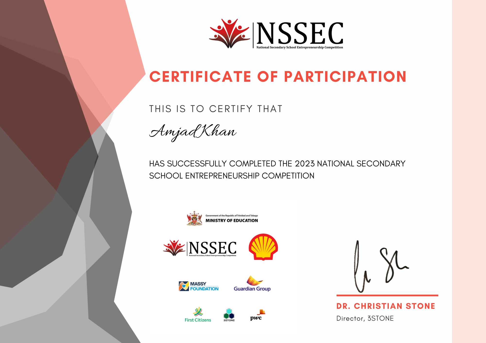

My name is Amjad Khan and I've been passionate about video games for a long time.
However, even a great passion can fade.
Recently, I've have began the journey of self improvement and working towards becoming an entrepreneur and I've come to realize that to be successful as one,
I need to be skilled in multiple areas.
That's why I'm currently studying Accounting Management of Business and Information Technology at BATCE Sixth Form,
where I'm perfecting my skills in Business and Technology.
I'm dedicated to pushing myself to create high-quality content while striving for accuracy and efficiency in my work.
As a business student, I understand that having a diverse skill set is crucial,
and I'm eager to use my skills and experience to make a positive contribution to any project.
I have completed CSEC and CAPE At BATCE,
These are some of my certificates I have received.
NSSEC Secondary School Championship Second Place 
This image showcases the second place my team and I achieved in the Six NSSEC Week Championship.